The people in the sample
| Person | Role | Sees |
|---|---|---|
| Bharat | Owner | Everything, can change everything |
| Lakshmi | Accountant | Same as owner |
| Ravi, Suresh, Prasad, Naidu, Kiran, Srinu, Raju (+3 more) | Staff | Loads, mills, quantities, freight, costs, photos, updates — never rates, bills or payments |
All names, mills, buyers, rates and amounts are invented sample values. The sample was made by running every step as these people through the real database rules, from 1 to 26 Nov 2026.
Home screen
Who: Everyone (money tiles only for Owner and Accountant)
- Counts of loads at every truck stage. Tap a tile to see those loads.
- Red bar: loads changed by someone else since you last checked.
- Latest updates: every change, with the exact time, the person and the reason.
- Staff never see the money tiles.

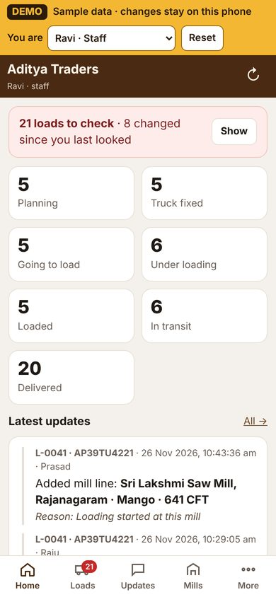
1 · Planning 5 sample loads
Who: Owner or Staff
- Tap + New load. Choose the buyer, destination and state, and the truck size (30 T / 35 T).
- Write the reason (e.g. “Goel asked for one load of Mango”).
- Check which mills have wood: More → Mills → Ask mills about loads (ready WhatsApp message to each mill).
- Post the replies as updates on the load, so nobody has to phone around.
- No truck number is needed yet.

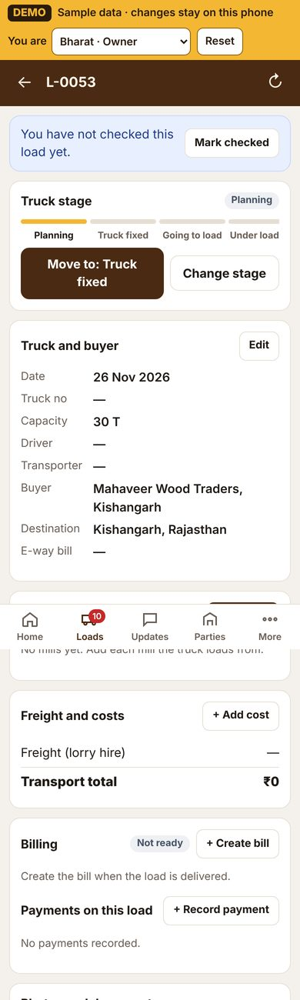
2 · Truck fixed 5 sample loads
Who: Staff (or Owner)
- Edit the load: truck number, driver name and phone, transporter, freight.
- Move to Truck fixed with a reason (e.g. “Truck booked with Sri Sai Transport”).
- The app refuses to leave Planning without a truck number.
- Freight and costs are visible to staff (owner's decision).
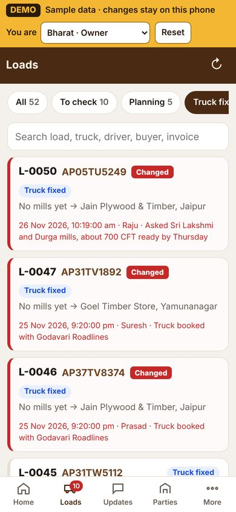
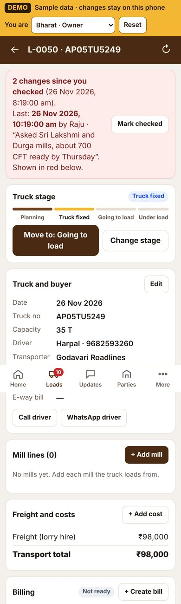
3 · Going to load 5 sample loads
Who: Staff
- When the driver starts, tap Move to: Going to load and give the reason.
- Call or WhatsApp the driver straight from the load page.
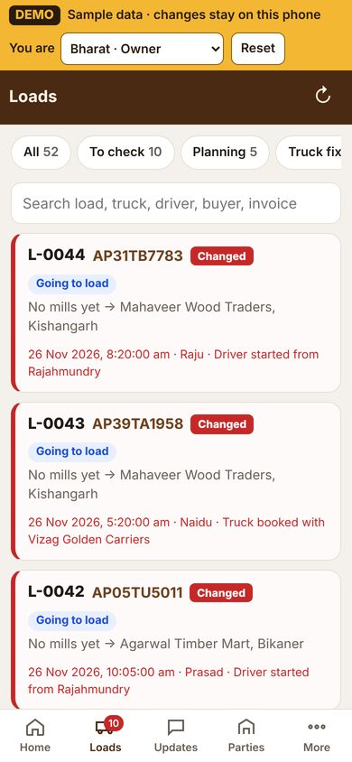
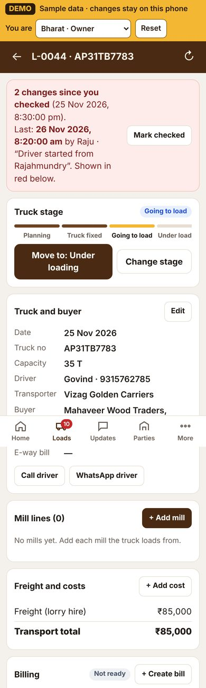
4 · Under loading 6 sample loads
Who: Staff add mills · Owner/Accountant set rates
- Staff: + Add mill for each mill the truck loads at: mill, wood, unit (CFT, Tons, Pieces, CBM…), quantity, length.
- The size grade is set from the length: Small under 4 ft, Medium 4–6 ft, Large over 6 ft (provisional, change in Settings).
- Owner or accountant: Set rate on each mill line. Amount = quantity × rate ± adjustment. The mill's last rate is suggested.
- The fill bar shows CFT against the owner's guide (about 1,350 CFT for 35 T).
- Staff never see rates or amounts — the database does not send them to staff phones at all.
- Every rate change is logged as “Admin only” with the reason.

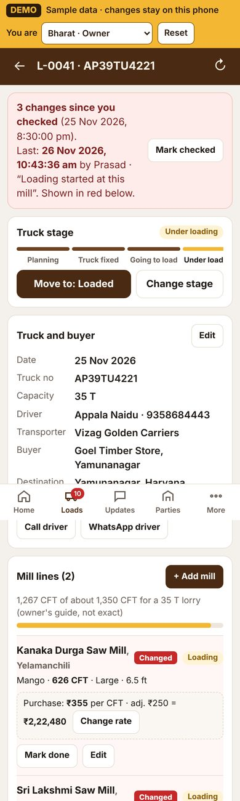
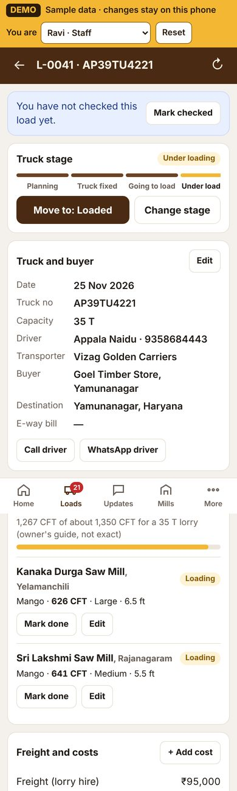
5 · Loaded 5 sample loads
Who: Staff
- At each mill: Mark done with the final quantity.
- Add costs (hamali, weighbridge…) and the kata slip photo.
- Move to Loaded with the reason, e.g. “All mills loaded, kata 34.2 T”.
- Loaded is refused while any mill line is not done.
- After Loaded, mills cannot be added or re-opened (move back to Under loading first).

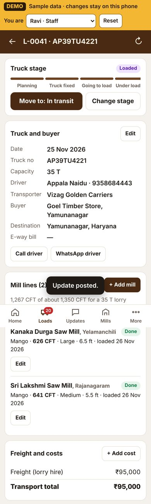
6 · In transit 6 sample loads
Who: Accountant enters e-way bill · Staff move the stage
- Accountant: edit the load and enter the e-way bill number.
- Staff: Move to In transit. Post driver updates (“crossed Nagpur”) instead of calling the office.

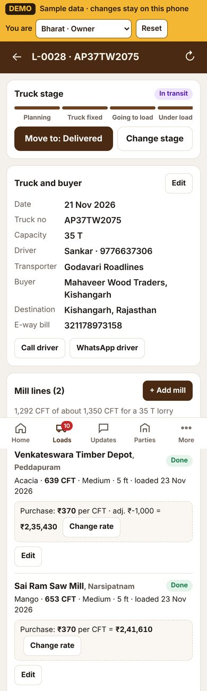
7 · Delivered and billing 20 sample loads
Who: Owner/Staff mark delivered · Accountant bills and records payments
- When the party confirms unloading: Move to Delivered → the bill status becomes Ready to bill.
- Accountant: + Create bill — invoice no and date, sale quantity, rate, adjustment, GST amount, credit days.
- Due date = invoice date + credit days. Record payments received (bank, UPI, cash, cheque) and payments to mills and transporters.
- Bill status moves by itself: Ready to bill → Billed → Payment pending (part paid or overdue) → Paid.
- Sample GST is left at ₹0 — the rate is for the accountant to confirm.
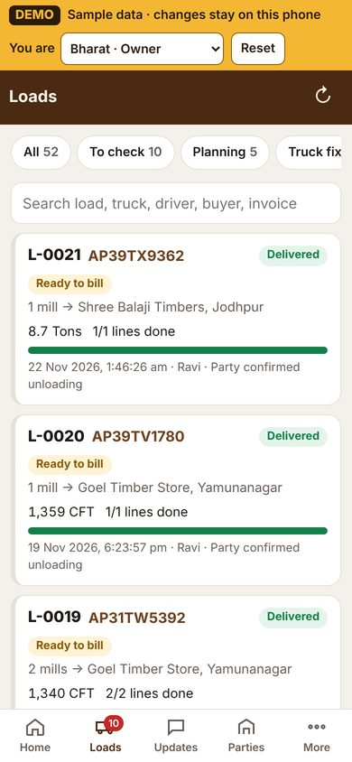
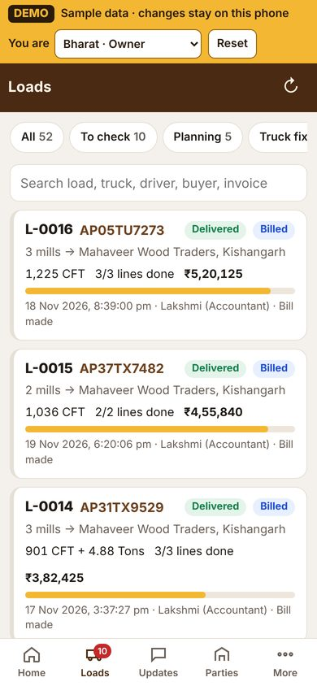
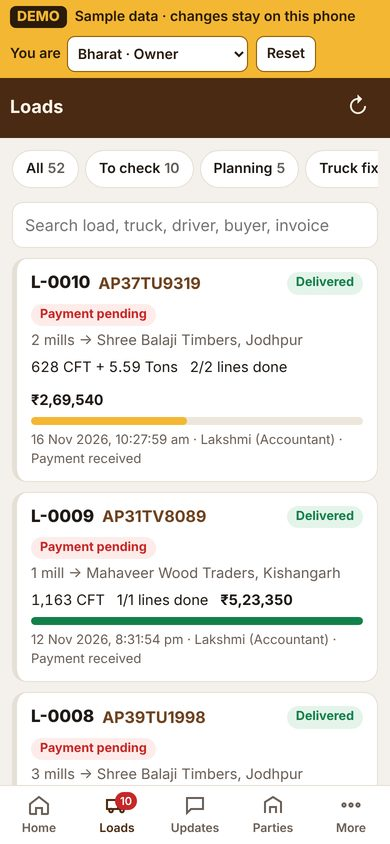

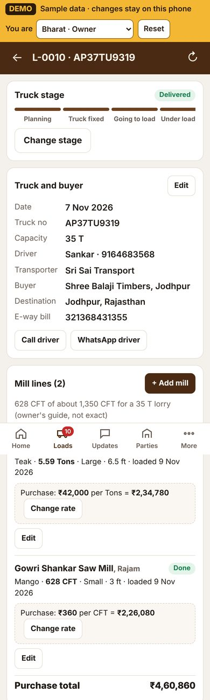
Who changed what — red flags
Who: Everyone
- Each person has their own “checked” time per load. Anything changed by others after that shows in red, with how many changes.
- Open the load: the new entries are marked red in the history. Tap Mark checked when done.
- The Updates screen lists every change across all loads.
- Nobody can edit or delete the history.
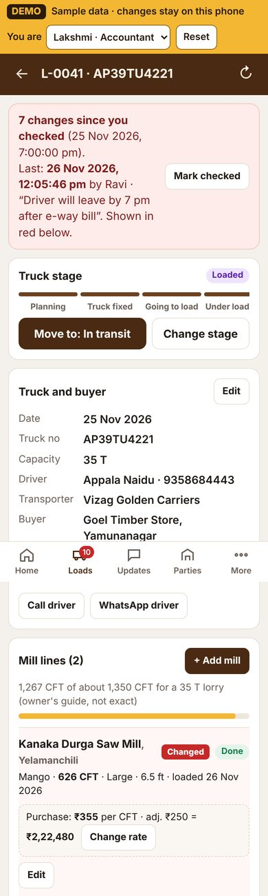
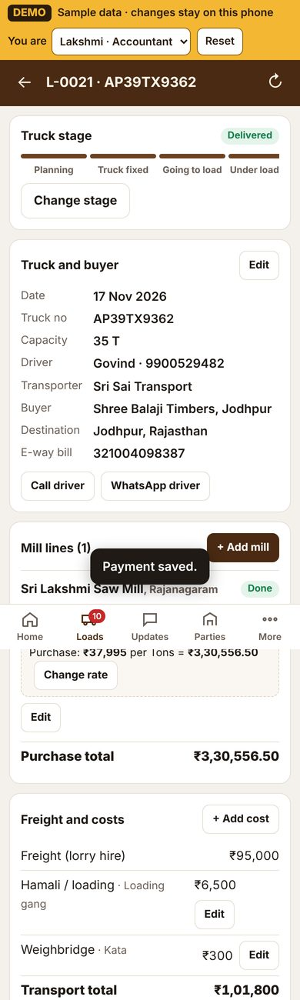
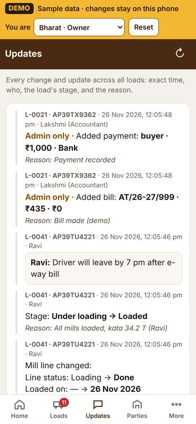
Parties and balances
Who: Owner and Accountant only
- Buyers: what to collect. Mills and transporters: what to pay.
- Open a party for its loads, payments and a WhatsApp reminder with the balance.
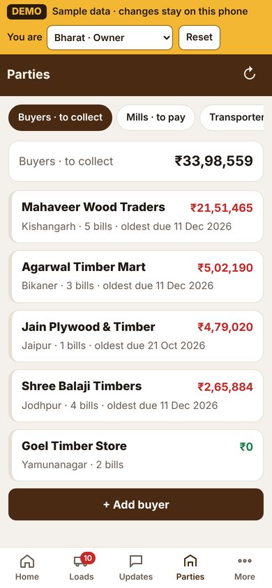
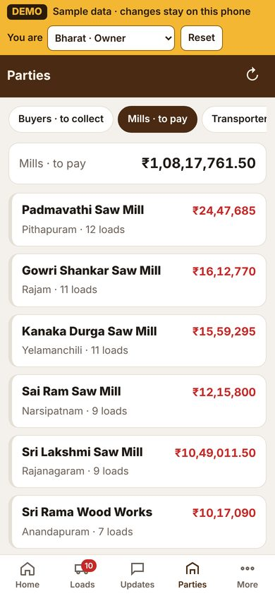